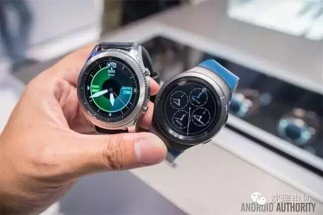
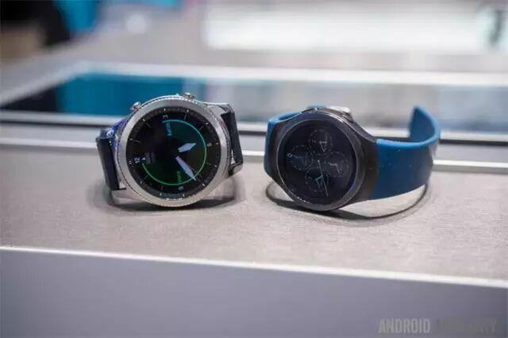
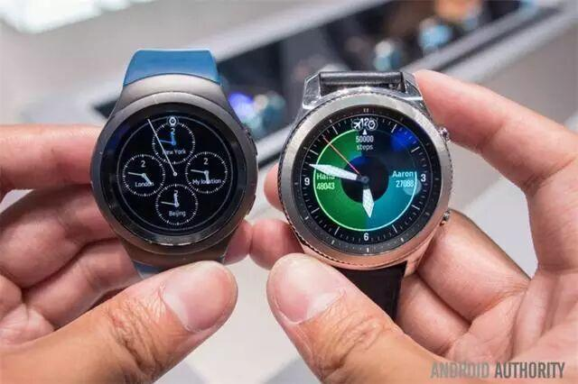
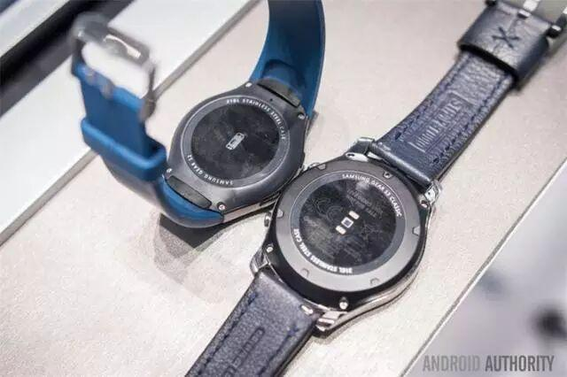
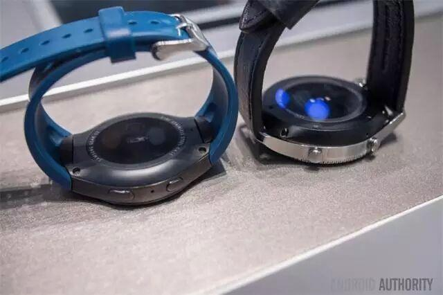
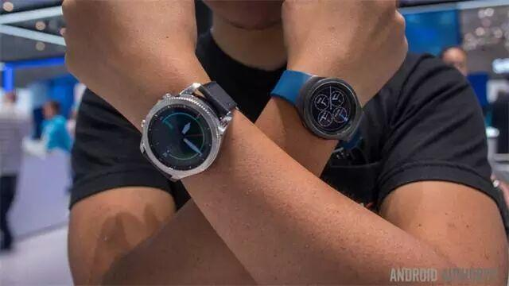

使用小程序

三星刚刚发布了最新一代智能手表Gear S3，而上一代Gear S2作为一款表现非常出色的手表，也会难免直接被拿来与Gear S3进行比较。整体来看，Gear S3与S2相比并没有太大的变化，只是外观的风格有了一些调整。
首先，去年的Gear S2拥有三个不同的版本，运动版、3G版以及Classic经典版。而Gear S3则只有两个版本，那就是Classic经典版和Frontier时尚版。
而我们比较的则是Gear S3和S2两个经典版的对比，而变化和不变，也都有值得介绍的地方。
设计
首先你会注意到Gear S3看起比Gear S2更加时尚和正式一些，而Gear S2则更加运动。而在系统方面，两款智能手表都采用了Tizen 2.3.2操作系统，并且拥有可旋转的边框。

Gear S2的塑料感更强，而Gear S3则由于配备了更突出的表冠而更加适合正装或者其它非运动场合。Gear S3将S2的橡胶表带换成了标准的22毫米金属表带，并且与Gear S2一样，S3也同样拥有IP68的防尘防水等级。
两款智能手表虽然都是Classic版本，但是风格上有明显的不同。S2更偏向于运动，而Gear S3更常规一些。同时Gear S3内置了LTE模块，在无需智能手机的情况下可以独立使用。
屏幕和尺寸
与Gear S2 Classic相比，Gear S3 Classic更厚、更重，屏幕也更大了。Gear S3的厚度为12.9毫米，重量为57克，配备了360×360像素的1.3英寸AMOLED显示屏，像素目的为278ppi。同时Gear S3也使用了康宁公司专为可穿戴设备打造的全新大猩猩SR+玻璃面板。

相比之下，Gear S2的厚度为11.4毫米，重量为47克，屏幕分辨率没变，但是尺寸略小，为1.2英寸，因此像素密度也额提升到了302ppi，但是二者的分别基本上看不出来。
而Gear S2的表盘直径为44毫米，而Gear S3的表盘直径达到了50毫米。基本上来说，Gear S3总体上看，比Gear S2要大了一圈。
配置

除了尺寸更大之外，Gear S3在配置上也提升了不少，包括提升了50%的RAM以及电池容量。另外，Gear S3全系标配了心率监测、NFC等，可以兼容Samsung Pay移动支付。而之前这些功能制造Gear S2 3G版本上才有。
电池

Gear S3配备了更大的380mAh容量电池，比Gear S2的250mAh高了不少，但是目前还无法进行完整的续航能力测试，而三星官方表示，Gear S3的使用时间能够达到四天。
系统
基本上Gear S3内置的Tizen系统与Gear S2没有太大的区别，只是在视觉效果和边框旋转的操作上有了一点点调整。与之前一样，Gear S3也内置了麦克风和扬声器，可以直接拨打和接听电话。
价格

目前三星并没有公布Gear S3 Classic或Frontier的具体价格，不过根据经验判断，显然会更贵一些。不过既然Gear S2已经取得了不错的成绩，那么作为在Gear S2基础上进一步修改的版本，我们相信Gear S3未来的市场表现也应该会相当不错。